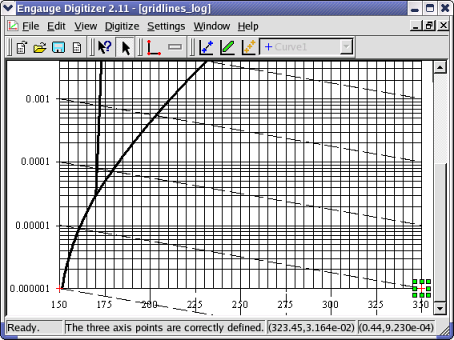

Engauge Digitizer - Fixing The Axis Points
Engauge Digitizer - Fixing The Axis Points
Engauge Digitizer - Fixing The Axis Points
Engauge Digitizer - Fixing The Axis PointsIf you are seeing unexpected values for the coordinates produced by Engauge Digitizer, then there probably is a problem with the axis points. Axis point problems include:
The trick for identifying the problem is to turn on Grid Display (in the View menu). Once the grid lines are displayed on top of the original, just read the coordinates along a few grid lines in the Status Bar, and the problem should become apparent, so you can fix it. For example, in the following picture the Y coordinate of the axis point on the right was typed incorrectly:

This trick is also helpful if your axis points are fine, but the problem lies in the original image.